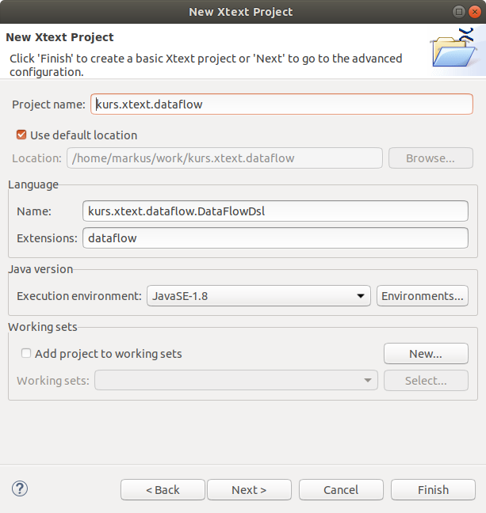

Xtext Project Setup
Create a new Xtext Project
In Eclipse
- Select in the menu "File" - "New" - "Project".
- Select "Xtext Project" and click "Next"
- Specify the project name:
- "Project name": "course.xtext.dataflow"
- "Name": "course.xtext.dataflow.DataFlowDsl"
- "Extension": "dataflow" then click "Next"

-
In the next step can configure your project. Select "Maven" as "Prefered Build System".

Do not ignore warnings concerning "Maven integration for eclipse (m2e)". If neccessary install "m2e" via "Help" - "Install New Software" - "All Availabe Sites" and restart Eclipse.
Finally, some projects are created in your workspace, from which we will only use a few of them at the moment (details: see (Mooji et al., 2017a)). An example grammar definition is created and opened in the editor.

Compile and Run the Project
In Eclipse (e.g., after a new project is created)
- In the grammar editor right click "Run As" / "Generate Xtext Artifacts"
- In the menu: "Run" - "Debug Configurations"...
- select "Eclipse Application"
- click Icon "New Launch Configuration"
- optional: specify configuration name and location of workspace. (the Xtext create language plugin will run in a new Eclipse instance)
- click "Debug"
In the new Eclipse instance the new language can be used:
- In the "Package Explorer" click "New Project".
- Select "Java Project“ to create a new Java Project (You can also choose, e.g., a C++ or an Empty Project).
- Create a folder "model" in this project.
- In this folder create a model file: "New" - "File" with "File Name"="test1.dataflow" (+"Finish"). Note: the file ending is important and must match the file ending specified for your language.
- Click "Yes" when you are prompted "Do you want to convert ... to an Xtext Project".
Now you can play with your new language (type CTRL-Space to get auto completion). Enter the following example:
Hello Pierre! Hello Tim! Hello Markus!
The grammar for this example (automatically created after project initialization) may look as follows. A "Model" contains "Greetings". Every "Greeting" consists of the Text 'Hello' and a name followed by '!' (details later).
grammar org.xtext.example.mydsl.MyDsl with org.eclipse.xtext.common.Terminals generate myDsl "http://www.xtext.org/example/mydsl/MyDsl" Model: greetings+=Greeting*; Greeting: 'Hello' name=ID '!';